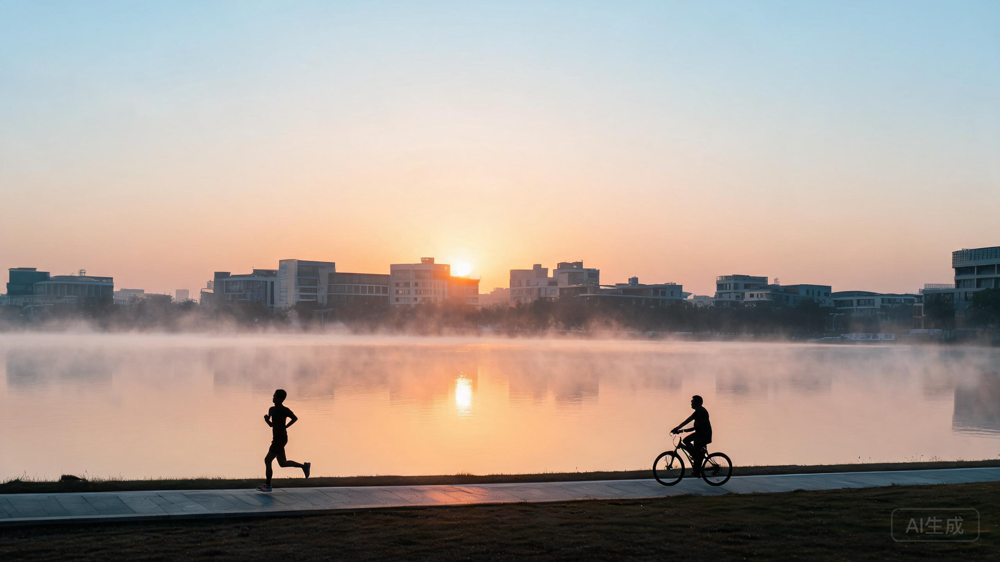
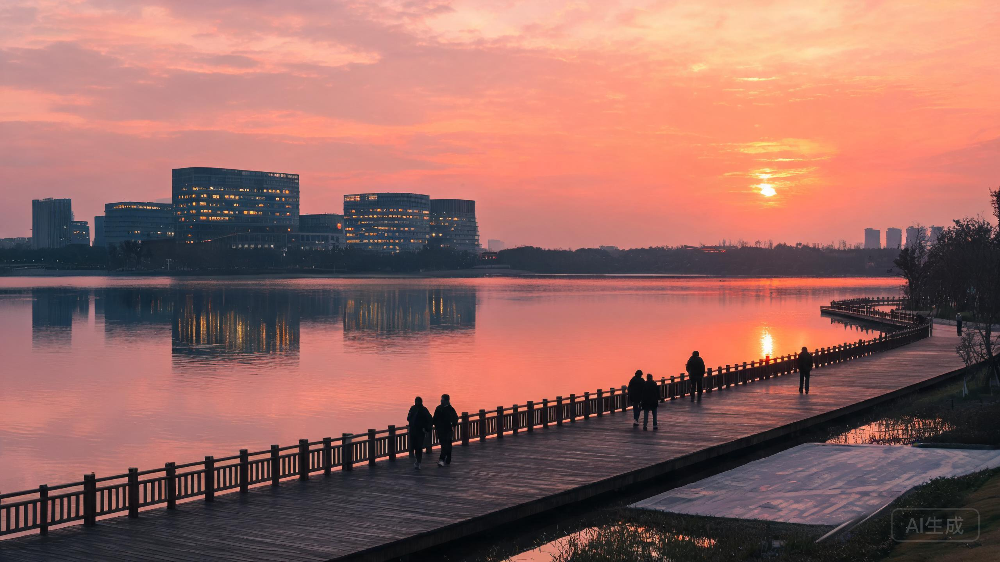

▲ 清晨的湖面与晨跑的人。示意图（AI 生成）
临港 · 周一早安
周一也没那么难，
先喝口热的
给每一个在临港开工的人
今早的临港，天亮得比闹钟早。
湖面上有一层薄雾，晨跑的人从步道上过去，脚步声很轻。便利店刚把热柜打开，包子冒着白气。公交站已经站了一排人，有人闭着眼，有人还在回昨晚的消息。
这就是周一。没有人特别想它，但它还是准时来了。
不聊大道理。就聊聊今天这几个小时，怎么过得舒服一点。
— 01 —
周一最难的，是起床那十分钟
不是工作难，是那十分钟难。被子外面是凉的，手机里是上周没做完的事，脑子里已经开始过今天的会。
我的办法很土：先坐起来，别想。想得越久，越起不来。
起来第一件事别刷牙，先去窗边站半分钟。看下楼下的车、树、或者干脆看看天。人清醒得比你以为的快。
然后一杯热的。茶、咖啡、热水都行，重要的不是喝什么，是给这一天一个"开始了"的仪式。
临港的早上很安静，安静到适合把节奏慢一点。反正班车不会因为你多站三十秒就开走。
— 02 —
通勤那一段，别全交给手机
从临港出去上班，路上少不了一段车程。很多人一上车就掏手机，刷到公司楼下，抬头的时候人是懵的。
试试看：上车先不掏手机，靠窗坐，看两站路。
临港这条线，窗外是有东西看的。水、树、天光，早上和傍晚都不重样。看两站，比刷十条短视频更让人清醒。
到了公司，也别急着开电脑。先花三分钟写一行字：今天最重要的一件事是什么。
就一件。写完再开邮箱，你会发现周一没那么容易被别人的事推着走。
— 03 —
中午别凑合，这是周一唯一的缓冲
周一的午饭，很多人是随便对付的。早上没吃好，中午又赶时间，一顿下去，下午整个人都是低气压。
其实不用多讲究，三个方向随便挑一个：
食堂：挑两荤一素，别全拿炸的。
吃完走五分钟，别直接回工位。
便利店：饭团加一份热汤，比一包薯片强。
至少坐下来吃，别边走边吃。
自带饭：前一晚多煮一点，周一就是救命的。
热一下，找个有窗户的地方吃。
一顿像样的午饭，能把周一下午从"熬"变成"过"。这个投入产出比，比任何效率方法都高。
— 04 —
下班后，给自己留三十分钟

▲ 傍晚的湖边步道。示意图（AI 生成）
周一下班，最容易被跳过的一步，是"缓过来"。
很多人从工位直接到饭桌，从饭桌直接到沙发，然后打开手机，一直到该睡了。一天就这么过去了，好像上过班，又好像什么都没发生。
试着留三十分钟。不用去健身房，沿着湖边走一圈就够。
临港的好处就在这儿：走几步就能看见水。天色暗下来的时候，水面是橘色的，风是凉的，人自然就松了。
这三十分钟不是浪费时间。它是一天的收尾，也是明天的开头。
周一不欠你什么，
但今天可以先对自己好一点。
早点出门，吃口热的，路上抬头看看天，中午好好吃饭，下班走一走。
就这些。不难，但很少有人做全。
评论区打卡：
你在临港上班第几年了？
今天早上，你是几点出门的？
点个关注。每个周一早上，这里都会有一句早安，陪你把这一周开头过顺。
说明：文中两张配图为 AI 生成的氛围示意图，非临港实景照片。